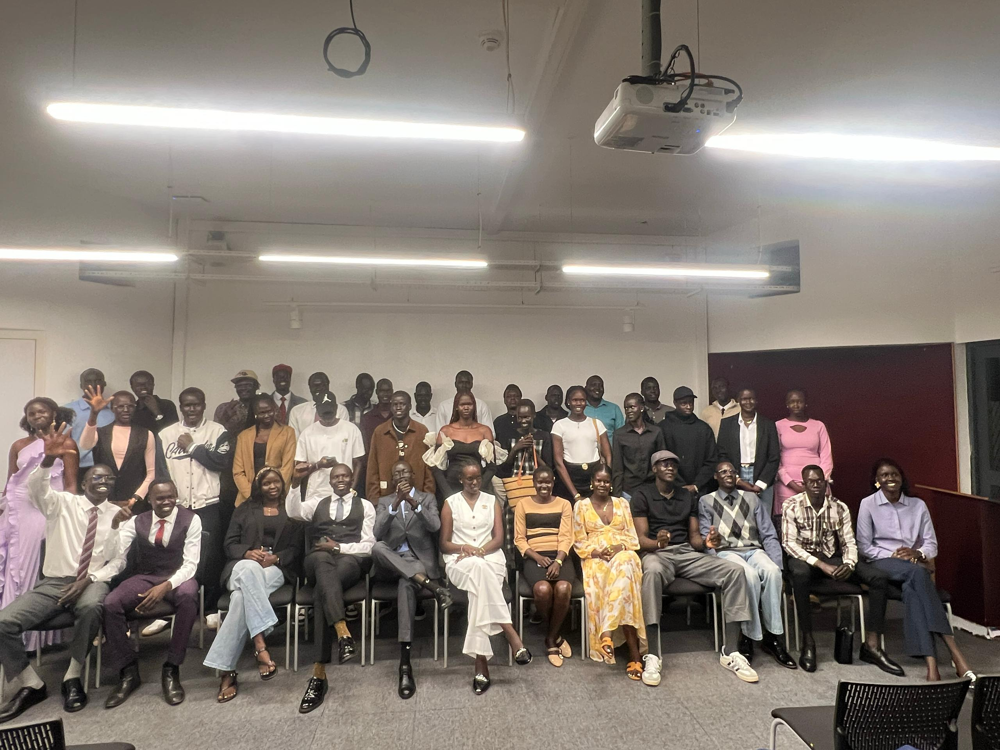

SSSALU · ALU Kigali
President, South Sudanese Students' Association at ALU · Apr 2026 to present · Kigali, Rwanda
Leading South Sudanese students at ALU
I lead and represent South Sudanese students across African Leadership University. I coordinate initiatives that build community, advocate for student needs and promote cultural identity, and I organize the events that bring people together. Working with my team and with university leadership, my focus is a better student experience for everyone.
Focus: team coordination and communication